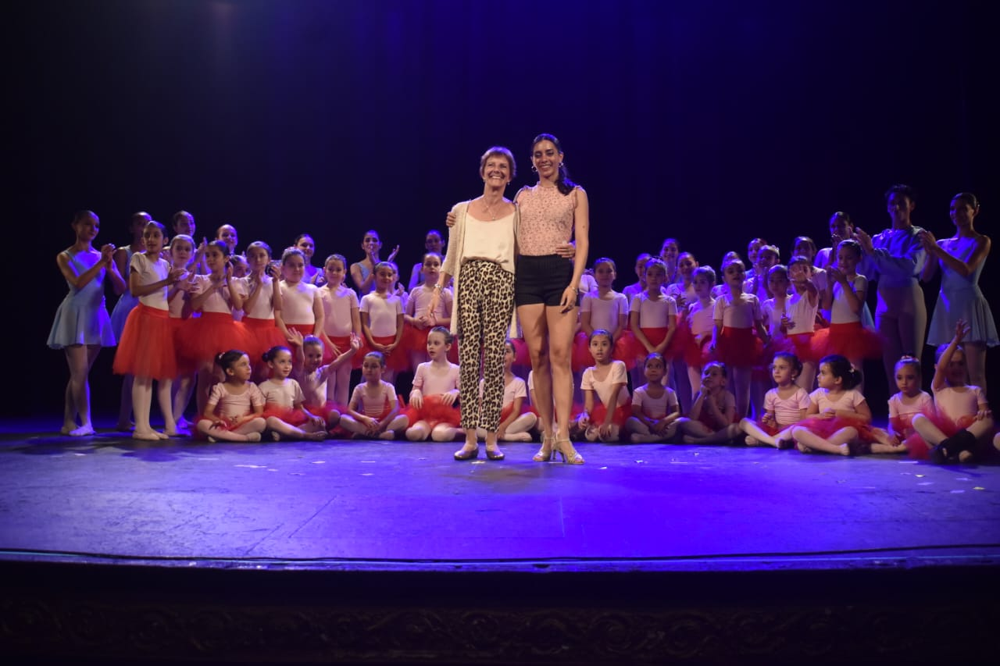

QUIENES SOMOS
Ballet en Rosa es un espacio que creamos nosotras, Adela Parma y Cecilia Sosa, madre e hija unidas por el amor a la danza y una vocación compartida por la enseñanza.
Adela tiene más de 30 años de trayectoria como docente. Fue bailarina del prestigioso Teatro Colón, donde participó en producciones emblemáticas del ballet clásico. Su formación rigurosa y su sensibilidad artística la convirtieron en una maestra apasionada, comprometida con transmitir la técnica, el respeto y la belleza del movimiento desde los primeros pasos.
Cecilia creció entre ensayos, clases y música. Se formó en danza contemporánea y tango, y desarrolló una mirada pedagógica fresca, cercana y creativa. Su manera de enseñar inspira confianza, libertad y expresión, construyendo espacios donde cada persona pueda descubrir su propia forma de bailar.
Juntas formamos un equipo que combina experiencia, calidez y una profunda vocación. En Ballet en Rosa proponemos un espacio de aprendizaje y juego, donde la danza es una herramienta para crecer, conectar y disfrutar en todas las etapas de la vida. Creemos en una enseñanza respetuosa, amorosa y comprometida, donde niñas, niños, jóvenes y personas adultas puedan florecer a su propio ritmo, encontrando en la danza un lugar para expresarse con libertad y autenticidad.
